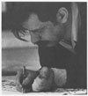

Christian Dotremont (1922-1979) was a Belgian poet and painter. He published his first poems and tracts in Belgian and French surrealist reviews in the early 1940s. During World War II, he lived clandestinely for a time in Paris and participated with Noël Arnaud’s surrealist offshoot La main à plume (Pen in Hand). In 1947 he founded the politically-minded surrealist group, Revolutionary Surrealism, and in 1948 he co-founded the experimental art movement Cobra (an anagram for the three capital cities of the countries that the artists came from—Copenhagen, Brussels, and Amsterdam). After the dissolution of the Cobra group, Dotremont wrote a novel, La pierre et l’oreiller (The Stone and the Pillow, 1955) and made several trips to Lapland, whose culture and environment remained a source of comfort and inspiration for the rest of his life.
In the 1960s Dotremont developed the logogrammes, a genre in which he blended poetry and painting. The logogrammes are spontaneous, visual poems that Dotremont usually painted in India ink on paper. They range in length and size from one word on a small sheet of paper, to multiple paragraphs on mural-sized canvases. The poems are written with such expressive flourishes that the writing is almost always illegible. Dotremont, however, wanted his work to be both seen and read, so he always recopied the text in a legible hand at the bottom of the page. When the logogrammes were published in book form, he substituted a typeset text for this handwritten transcription. The logogrammes have been exhibited in major galleries and museums around the world. In 1998, Mecure de France published Dotremont’s collected poems, and in the same year, Cobraland, a collection of his writings on art, appeared. Recent catalogues, such as J’écris pour voir (Buchet Chastel, 2004) and Les développemets de l’oeil (2004, Free University of Brussels) have made high quality reproductions of his logogrammes more widely available.
<<<Back Continue>>>